La Scrittura Asemica, al limite
tra il familiare e l’incomprensibile, rappresenta, attraverso segni tersi sui fogli, il dubbio del non capire
Scrittura asemica nella storia
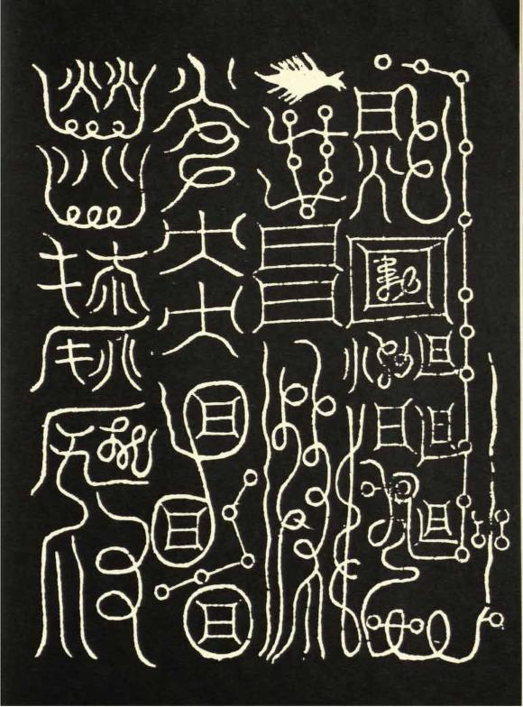
Tao Magico
(Cina xi-xvi Sec.)
Unico esempio sopravvissuto della scrittura segreta conosciuta come “caratteri brillanti di giada” basata sui trigrammi dell’I-ching e utilizzata nei talismani riferiti ai cambiamenti, 1115 Tao-tsang
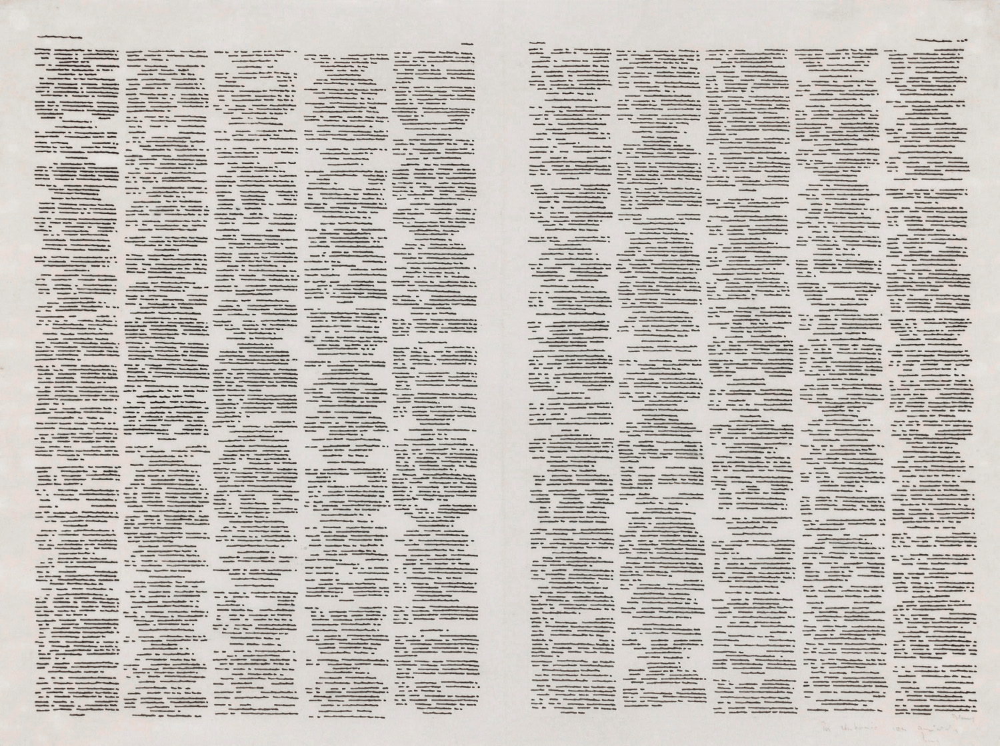
Irma Blank
(Germania-Italia, 1934-2023)
Irma Blank, Trascrizioni, 1974, inchiostro di china su carta simile a pergamena, 33 × 43,5 cm, © Irma Blank e P420, Bologna
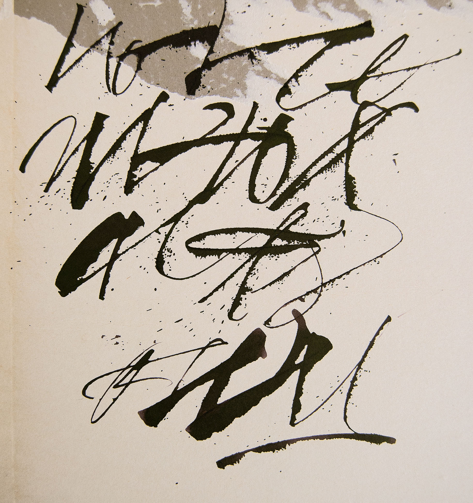
Marco Campedelli
(Verona, Italia)
Immagine concessa per gentile autorizzazione dell’artista Marco Campedelli
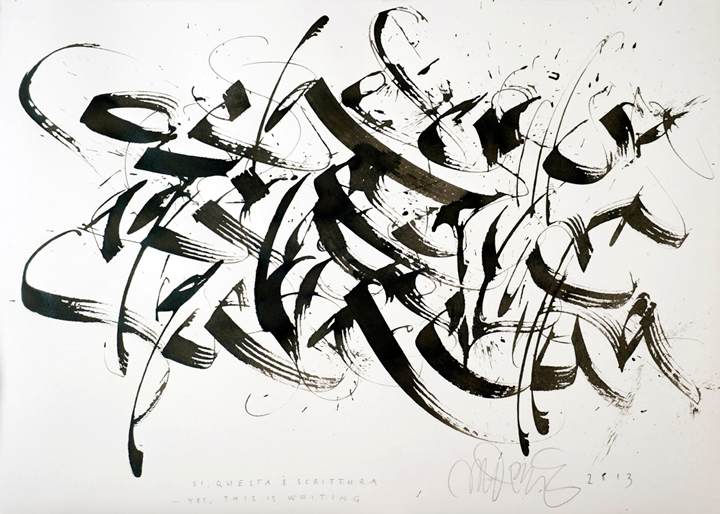
Monica Dengo
(Arezzo, Italia)
Immagine concessa per gentile autorizzazione dell’artista Monica Dengo

Federico Federici
(Italia)
Immagine concessa per gentile autorizzazione dell’artista Federico Federici
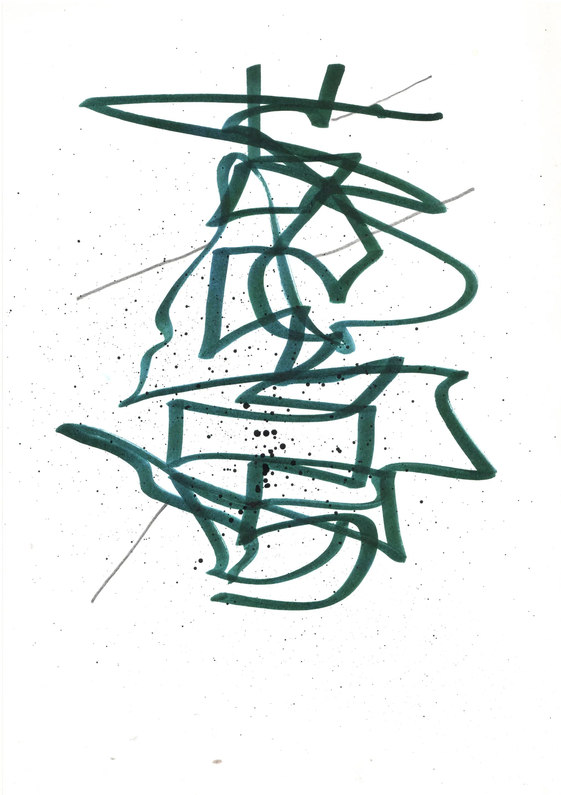
Tim Gaze
(Australia)
Tim Gaze, da Poemeleon: A Journal of Poetry © 2019 Poemeleon Tim Gaze
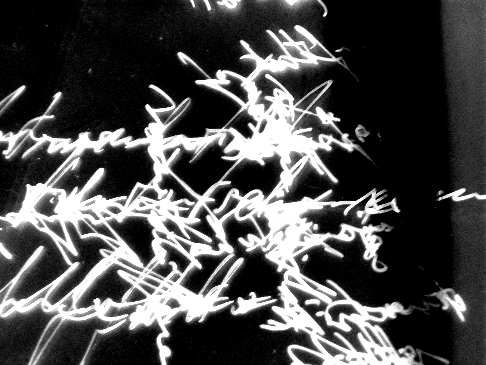
Marco Giovenale
(Roma, italia)
Immagine concessa per gentile autorizzazione dell’artista Marco Giovenale
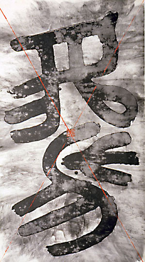
Wenda Gu
(Cina-USA, 1955)
Wenda Gu, Il mito delle dinastie perdute - forma C: scrittura pseudo-sigillare in avvolgimento antico, 1985-87, spruzzi d’inchiostro su carta di riso, sigillo, 50 opere in totale, 150 × 84 cm ciascuna Accademia Cinese di Belle Arti, Hangzhou, Cina
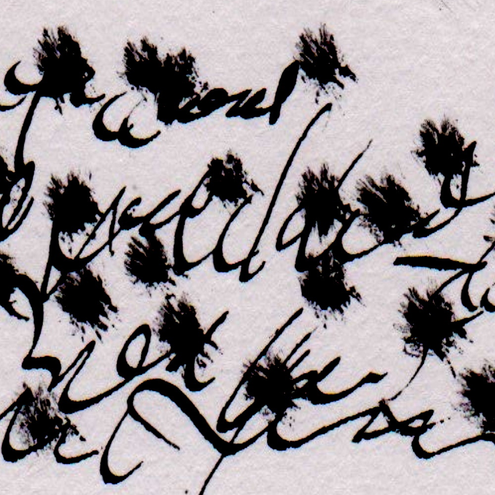
Satu Kaikkonen
(Finlandia, 1967)
Satu Kaikkonen, Just Some Writings, 21 gennaio 2024, pubblicato sul sito personale dell’autore
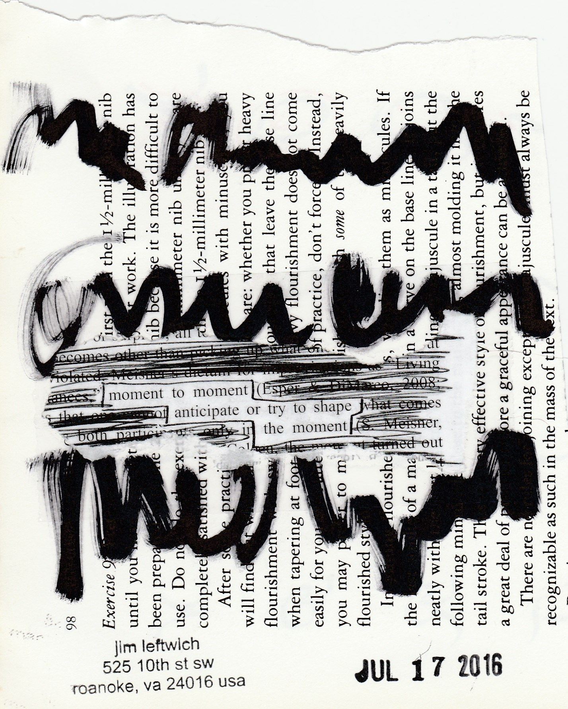
Jim Leftwich
(Charlottesville, USA, 1956-2025 )
Jim Leftwich, Marks, 1997 da Lost & Found Times #39
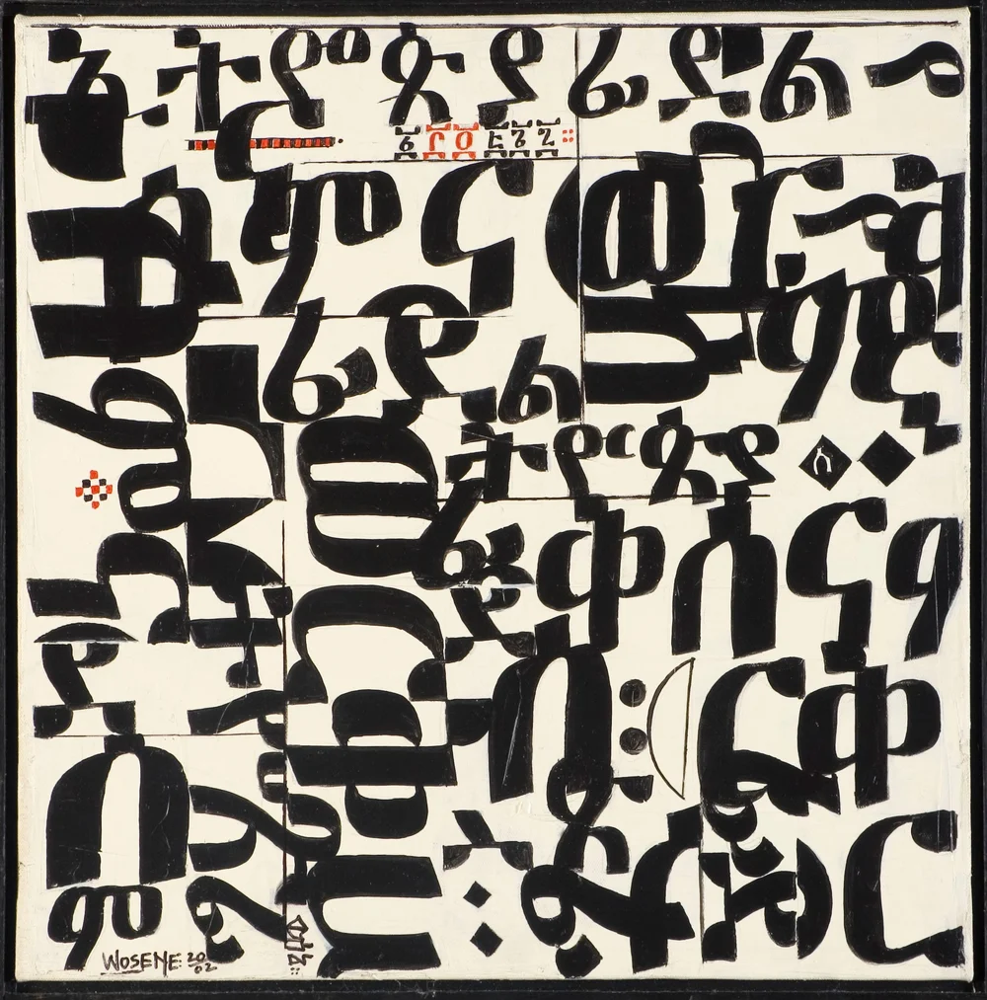
Wosene Worke Kosrof
(Etiopia-USA 1950)
Wosene Worke Kosrof, WordPlay, 2002, acrilico su tela, 46,4 × 45,7 cm Collezione dell’artista

Esperimenti personali
di scritture nuove
Accanto, alcuni esempi di sviluppi ed esperimenti personali ispirati dall’osservazione di autori e autrici asemici e asemiche, utilizzando tecniche e supporti diversi e ascoltando suggestioni scrittoree varie.
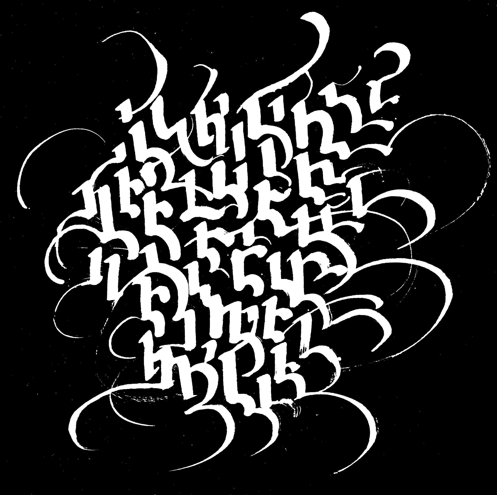
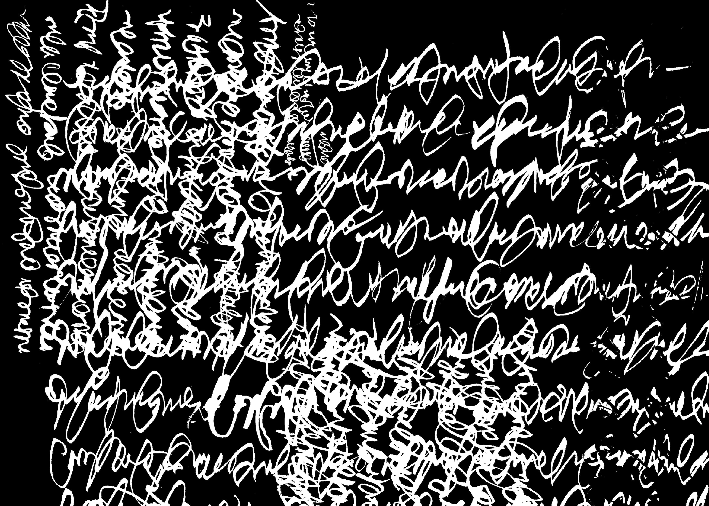


Asemia intorno al mondo
L'attività della scrittura asemica appartiene alle nostre vite molto più di quanto si pensi: i segni che si fanno provando una penna che non funziona, le scritte tracciate sovrappensiero mentre si ascolta una telefonata, le scritture inventate o che si fanno prima di imparare a scrivere quando si è bambini: sono tutte scritture asemiche che, vicine a quelle dei calligrafi, si annoverano al grande gruppo, facendone parte a pieno titolo nonostante siano spesso sommerse nella quotidianità.
Inserisci i tuoi dati e carica l'immagine del tuo pezzo asemico. Al momento dell'invio, l'opera verrà geolocalizzata in tempo reale e aggiunta come nuovo landmark sulla mappa soprastante.